Three original isometric directions for Draw. The name leads; CREATE SOMETHING stays in publisher information. Select a direction to see its application.

Draft uses a dedicated optical master at 16 and 24 px. Each mark also has a one-color study. Wordmark: the existing Canon sans stack, medium/semibold, with restrained spacing. Marks carry no status meaning. Beside “Draw” they are decorative; standalone app icons are named “Draw”. These are original vectors—not a trademark clearance or Apple icon-template certification.